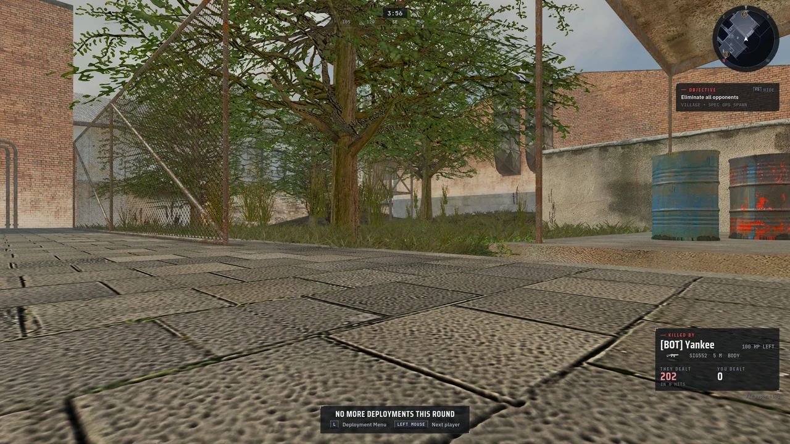
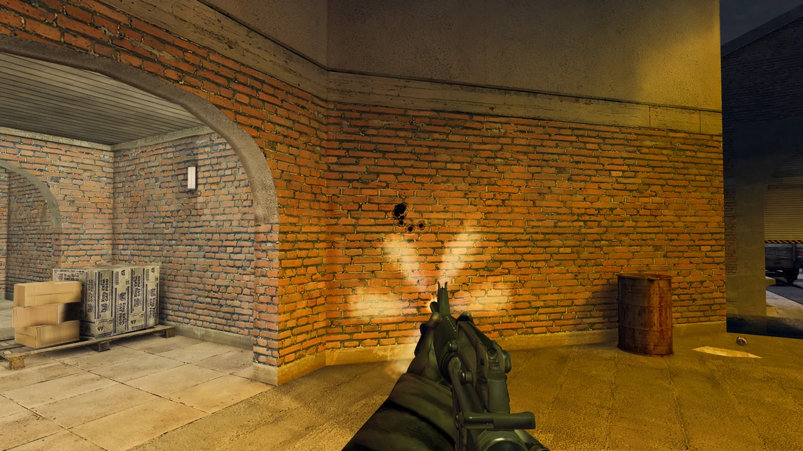
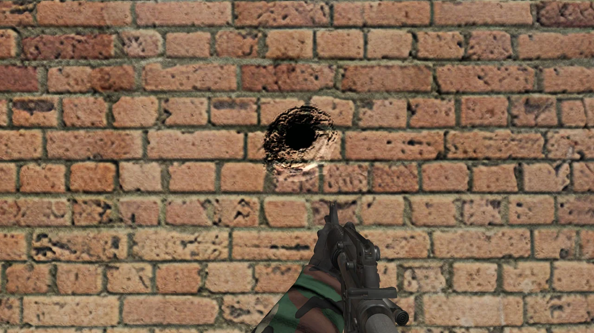
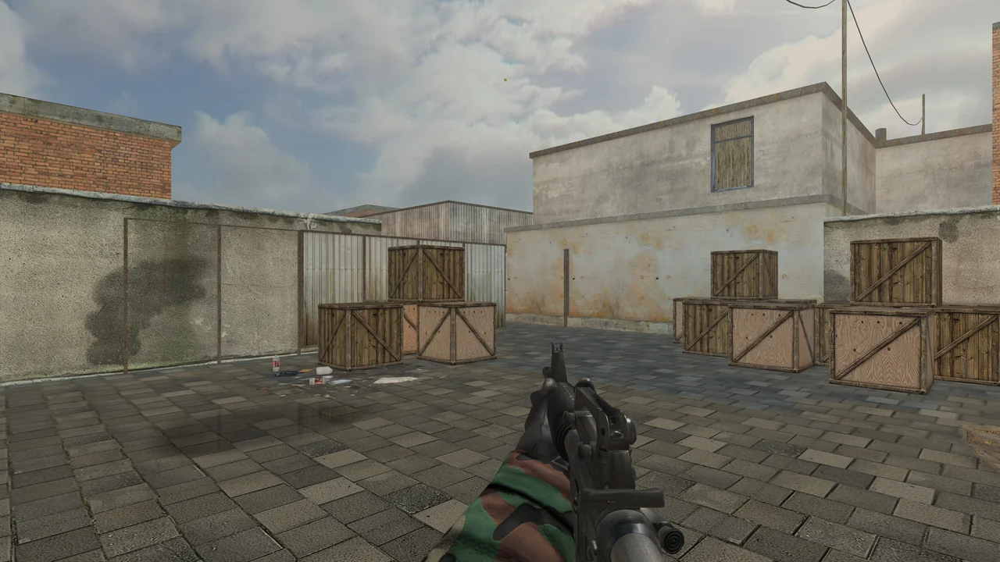
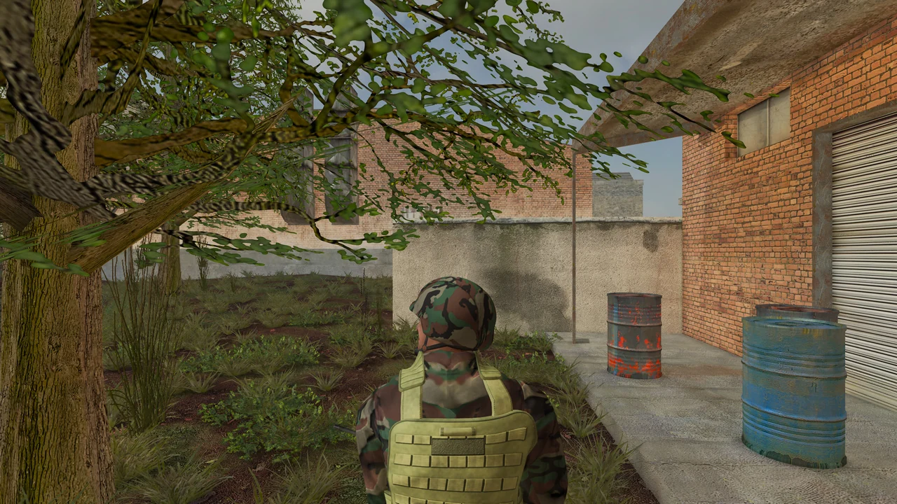
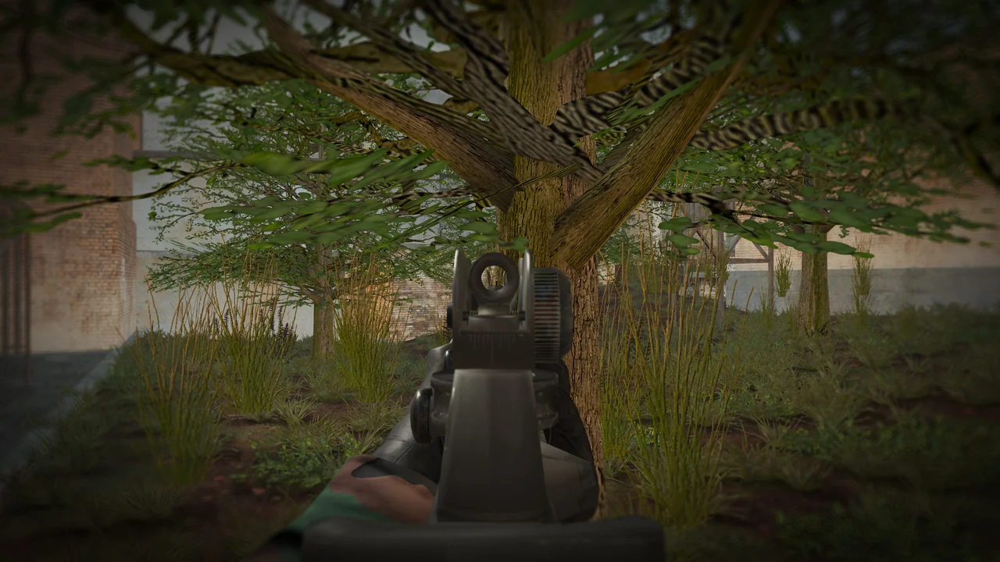
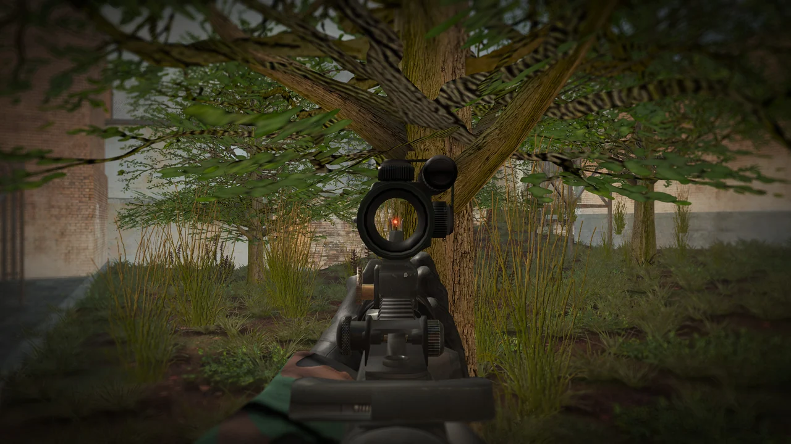
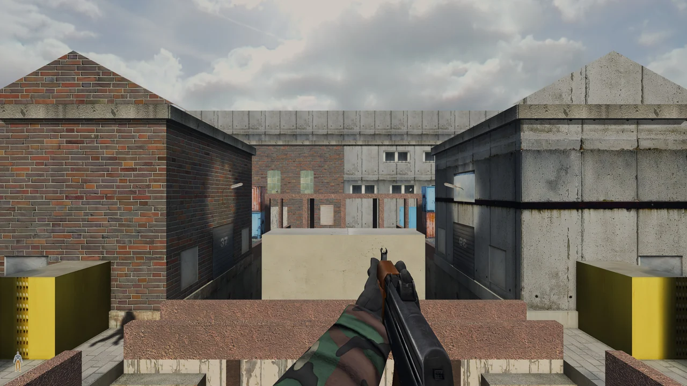
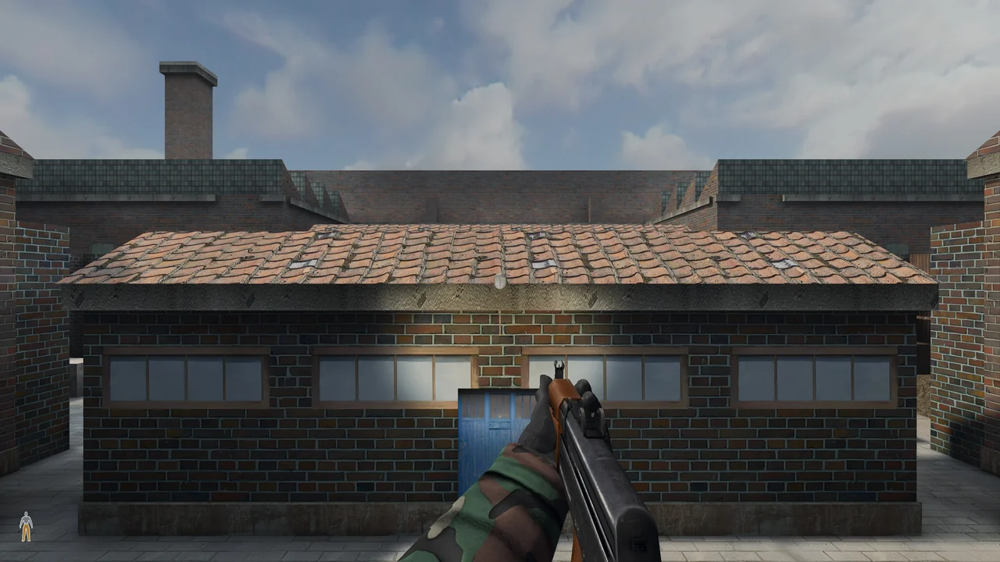

Van de grond af
Een volledig nieuwe interface, een nieuwe generatie licht en effecten, de keuze tussen Remastered en Classic, Season 1, locatiepings, CQB in de kern van het spel, een gloednieuwe map genaamd Lockgate en een lange lijst wijzigingen op basis van jullie feedback. Het volledige verhaal van update 0.40.0, onze grootste tot nu toe.

Toen we 0.40.0 begonnen te plannen, was de opdracht kort: maak er een mijlpaal van. Geen patch met een lange lijst eraan, maar een update die verandert hoe TrueCombat: Platinum eruitziet, klinkt en aanvoelt, van het moment dat je de launcher opent tot de laatste ronde van een match.
Dat betekende dat we bijna alles moesten aanpakken. Elk menu is opnieuw ontworpen. Achter de belichting zit een nieuwe generatie effecten. De soldaten, de maps en de geluiden zijn geremasterd, en voor het eerst kies je zelf of je met die nieuwe laag speelt of met het spel zoals het er twintig jaar geleden uitzag. Season 1 komt eraan, zodat elke match iets krijgt om naartoe te spelen. Locatiepings geven elk team een stem, ook zonder microfoon. En close quarters combat, dat twee updates lang achter een experimentele schakelaar zat, wordt een vast onderdeel van het spel.
Laat in de ontwikkeling lazen we ook een ronde feedback van de community over richten, terugslag en sniperen, en besloten we dat die verbeteringen niet tot een volgende release konden wachten. Ook die zitten in 0.40.0.
0.40.0 zit nu in de laatste testfase en komt binnenkort. Dit is de lange versie, met alles wat we veranderd hebben en waarom, zodat je alles kunt lezen voor je speelt.
Een interface gemaakt voor dit spel
De menu's die Platinum erfde, waren gemaakt voor een ander tijdperk: kleine vaste schermen, veel tekst en lay-outs die uitgingen van een 4:3-monitor. Ze werkten, maar ze voelden nooit als deel van een moderne tactische shooter. Voor 0.40.0 hebben we ze allemaal opnieuw gebouwd.
Het hoofdmenu, Opties, Deployment, de serverbrowser, het laadscherm en de matchschermen delen nu één ontwerptaal: strakke panelen, duidelijke letters en een vaste manier om te tonen waar je bent en wat een instelling doet. Opties is ingedeeld zoals jij erover nadenkt, niet zoals de engine het opslaat. Grafische presets zetten met één klik een goed vertrekpunt, en elke afzonderlijke instelling staat er nog steeds onder als je die wilt.

De serverbrowser kreeg filters, dus een volle Ranked-server of een lege om te oefenen vinden betekent niet langer door een lange lijst scrollen. Meldingen houden je op de hoogte zonder het scherm over te nemen. Achter elk paneel zit een zachte achtergrondvervaging, zodat de wereld die je net verliet zichtbaar blijft.
Een HUD die niet in de weg zit
Ook de HUD in het spel is nieuw, en die staat nu standaard op 70 procent van zijn oude grootte. Op een moderne breedbeeldmonitor nam de oude HUD meer ruimte in dan nodig. De nieuwe schaalt correct mee met je resolutie en houdt het midden van het scherm vrij voor waar het om draait: het gevecht. Wil je hem groter, dan gaat de schuifregelaar in Opties helemaal terug.

Weten wat er gebeurde
Twee schermen vertellen je meer over elke ronde en elke match dan het spel ooit deed. Het death recap toont wie je raakte, met welk wapen en van waar, zodat een dood iets is waar je van leert in plaats van iets waar je naar raadt. Aan het einde van een match vat het post-match-scherm je spel samen.
Callouts verschijnen nu op het scherm terwijl je door een map beweegt, en het zijn dezelfde namen die je team ziet in pings en op de minimap. Als iemand "Pump hall" of "North street" zegt, bedoelt iedereen dezelfde plek.
Een nieuwe generatie licht
Het engine-werk in 0.40.0 is de grootste stap voor de renderer van Platinum sinds DirectX 12. Het doel was niet om de maps op een ander spel te laten lijken. Het doel was dat licht zich gedraagt zoals je oog verwacht, zodat een gang, een binnenplaats of een mondingsvuur in een fractie van een seconde juist leest.
Licht dat beweegt
Mondingsvuur en explosies verlichten nu de wereld rondom. Vuur een geweer af in een donkere trappenhal en de muren flikkeren mee. Een granaat die om de hoek ontploft, werpt een korte gloed over de vloer nog voor het geluid je bereikt. Deze dynamische lichten zijn snel genoeg voor elke preset die ze heeft, en ze verraden precies zoveel als ze moeten: een vuurgevecht in een donkere kamer zie je vanuit de deuropening.

Lucht en hemel
Op DirectX 12 heeft elke map nu een atmosfeer. Zonverlichte nevel bouwt zich op over lange zichtlijnen, en de hemel past bij het tijdstip van elke map in plaats van erachter te hangen als een geschilderd decor. Bounce light laat zonbeschenen oppervlakken zachte kleur afgeven aan kamers en hoeken in de buurt, zodat een interieur naast een felle binnenplaats niet langer egaal donker is.
Lampen werpen nu schaduwen. Mist wordt verlicht door de lichten erin. Armaturen werpen poelen van licht op de vloer eronder, wat samen met de donkerdere belichting uit 0.39 echt contrast geeft tussen verlichte en donkere ruimtes.
Elke inslag
Kogelgaten en brandplekken hebben nu diepte in plaats van platte stickers op een muur te zijn. Een nieuw deeltjessysteem stuurt inslagen, rook, vonken en puin aan, zodat een salvo in beton stof en scherven opwerpt die zich ook zo gedragen. Rookgranaten zijn dichter, en lege hulzen blijven na een vuurgevecht op de vloer liggen.

De kill cam, die in 0.39.6 zijn filmische camera kreeg, voegt tijdens de herhaling op DirectX 12 nu scherptediepte en een kleurgrading toe.
Sneller, op meer pc's
Nieuwe effecten betekenen niets als het spel er moeilijker door draait. Dankzij een shadercache laden maps sneller na de eerste keer, en een slimmer texturebudget houdt kaarten met minder videogeheugen soepel in plaats van te haperen als de textures van een map niet passen. Na een mapwissel blijven de schaduwen en belichting van de vorige map niet meer achter, wat sommigen van jullie zagen als donkere rechthoeken die op muren zweefden.
Remastered of Classic: jij kiest
TrueCombat:Elite heeft een look die velen van jullie nog precies voor zich zien. We wilden het spel vooruit helpen zonder dat van iemand af te nemen, dus 0.40.0 voegt één schakelaar toe in Opties: Remastered of Classic.
Remastered geeft je de nieuwe laag waar we al maanden aan bouwen. De maps krijgen geremasterde materialen en props, trouw aan de originelen: dezelfde lay-outs, dezelfde silhouetten en dezelfde plekken die je kent, met oppervlakken die standhouden op een modern scherm. De Special Forces en Terrorists zijn geremasterd met nieuwe vesten en uitrusting, je handen in first person zijn ronder en beter gevormd, en de spullen die je draagt zijn ook geremasterd. Voor wie op een krachtige pc speelt, biedt de launcher op Ultra een optioneel HD-texturepakket van ongeveer 1 GB aan.
Classic geeft je de originele look van TrueCombat, zoals hij was.

 Classic
Remastered
Classic
Remastered
De schakelaar verandert alleen wat je ziet. Hitboxen, zichtlijnen, beweging en geluid zijn in beide modi identiek, dus geen van beide keuzes geeft een voordeel. Elk team heeft nu ook één soldatenmodel, zodat elke speler er in een vuurgevecht hetzelfde uitziet: een vijand is in één oogopslag een vijand, wat je ook gekozen hebt.
In Deployment maak je je soldaat eigen met vijf camo's per team, en Terrorists kunnen kiezen voor een pet, een hoofddoek of een bivakmuts.

Season 1
0.40.0 legt de basis voor Season 1, en de launcher toont je seizoenskaart al op het startscherm. Zodra het seizoen begint, telt elke match mee: rangen van Rookie tot Platinum, die je verdient door te spelen, en elke week drie nieuwe contracten met duidelijke doelen, in Ranked en Unranked.
Voor als je liever alleen speelt, krijgen twee solo-uitdagingen elk hun eigen leaderboard: de Range Run, een parcours op tijd op de schietbaan, en een uitdaging tegen bots. Iedereen die in het lanceringsseizoen speelt, krijgt de Frontline-badge. We kondigen de start van het seizoen aan op Discord en hier in de devlog.
Locatiepings
Niet iedereen speelt met een microfoon, en in een snelle ronde is er zelden tijd om te typen. Het nieuwe pingwiel geeft elke speler een stem: Go, Enemy, Danger, Watch, Help, Bomb, Acknowledge en Clear.
Pings gebruiken de callout-namen van de map zelf en verschijnen als stippen op de minimap, dus "Enemy, Pump hall" is een volledige zin die je team meteen begrijpt. Ook bots reageren op je pings: markeer een plek om naartoe te gaan en je bot-teamgenoten trekken met je mee.
CQB wordt deel van het spel
Close quarters combat begon in 0.38.0 als experiment, met eigen wapens, vizieren, geluiden en regels achter een aparte serverinstelling. De reacties waren duidelijk genoeg: het wordt nu een vast onderdeel van het spel.
CQB-wapens, -vizieren en -geluiden zitten op elke server, zonder experimentele instelling. De map Harbour komt in de mappool, en CQB Rules wordt een gewone Unranked-modus. De G3 krijgt een semi-automatische stand, en de M110 is gerepareerd.
CQB-wapens komen ook in Ranked, met twee uitzonderingen. De Shorty-shotguns en de akimbo M1911 blijven voorlopig in Unranked, omdat ze op korte afstand sterk genoeg zijn dat we meer gegevens willen voor ze ranked matches beslissen.
Jullie feedback
Kort voor deze update klaar was, kwam er een ronde feedback van de community binnen over hoe richten, terugslag en sniperen aanvoelen. In plaats van de antwoorden voor de volgende release te bewaren, hebben we ze in 0.40.0 gestoken.
Richten via het vizier
Als je richtte via het vizier, zat het wapen te ver van je oog. Het vizier was klein en op sommige geweren moeilijk te onderscheiden tegen een drukke achtergrond. Elk wapen komt nu dichterbij als je richt, per wapen afgesteld, zodat het vizier groter en beter leesbaar is en toch gecentreerd blijft op je richtpunt. De AK-47 komt iets minder dichtbij dan de rest, zodat zijn stofkap het vizier niet verdringt.
We hebben ook opgeruimd wat er op het scherm gebeurt als kogels inslaan. Als je geraakt wordt, blijft je eigen bloedeffect nu weg uit het midden van het scherm in plaats van over je vizier te spoelen. Bloed op een doelwit is kleiner en verdwijnt sneller, en de hitmarker is slanker, zodat je ziet of je doelwit nog overeind staat.

 0.39
0.40.0
0.39
0.40.0
Een optionele red dot
Tien geweren en machinepistolen kunnen nu een M68-red dot dragen: de M4, M16, SIG 552, SG 552, SCAR, REC7, MP5, MP5SD, UMP45 en MP9. Je zet hem per wapen aan in Deployment, en andere spelers zien hem in third person op je wapen.
De red dot verandert wat je ziet, niet hoe het wapen zich gedraagt. Gezichtsveld, spreiding en terugslag blijven precies hetzelfde als met het standaardvizier, dus het is een kwestie van smaak en geen voordeel. Op de M4, M16 en REC7 zit de dot op een kleine verhoging, zodat de korrel van het vizier er net onder blijft uitlijnen.

Terugslag onder controle
De terugslag klom en kwam nooit helemaal terug. Na een salvo bleef je zicht iets hoger dan waar je begon, en over een paar salvo's liep dat op, het ergst bij de AK-familie. We vonden de oorzaak: het spel gaf maar een deel van de kick van elk schot terug, en het willekeurige deel van de klim kwam nooit terug.
Nu komt de hele kick terug. Tussen salvo's zakt je zicht in ruim minder dan een halve seconde terug naar waar je richtte, de willekeurige extra klim is gehalveerd en de AK-47 trapt iets minder. In onze tests liet een AK-47 na tien kogels het zicht ongeveer tien graden hoger staan dan het eerste schot. Nu keert het terug naar het begin. Terugslag kost je nog steeds iets terwijl je vuurt. Hij volgt je alleen niet meer naar je volgende doelwit. Dit geldt met Tactical-balans, die standaard op elke server draait.
Sniperscopes
Sniperscopes zoomden in en uit volgens een trage curve die bijna een seconde nodig had om tot rust te komen. Ze zoomen nu sneller in en veel sneller uit, zodat je van je scope af kunt en op iemand dichtbij kunt reageren zonder op het beeld te wachten. Het standaardvizier houdt zijn huidige timing.
We hebben ook een hardnekkig probleem opgelost dat sommigen van jullie meldden met de R93: schoten door de scope terwijl je leunde, konden een doelwit missen dat pal in het midden van het dradenkruis stond. Als je leunt, kantelt de camera en zit je oog iets lager, maar het schot vertrok nog vanuit de rechtopstaande positie, enkele centimeters te hoog. Schoten, granaatworpen en de controle op een geblokkeerde loop vertrekken nu allemaal van waar je oog echt is, aan beide kanten.
Raakbevestiging
Een treffer moet als een treffer aanvoelen. De Remastered-hitgeluiden zijn nieuw: een zware, vlezige klap bij lichaamstreffers, een scherpe botkraak bij headshots en een zwaardere bevestiging bij een kill. We maakten ze van echte opnames in plaats van synthetische tonen, omdat de eerste versies mechanisch klonken, en een treffer die je hoort zonder te kijken is veel waard in een vuurgevecht. Classic houdt de originele set.
Hitgeluiden en hitmarkers blijven je eigen keuze op Unranked-servers. Op Ranked staan ze altijd uit, omdat we in een competitieve match willen dat je een gevecht met je eigen ogen beoordeelt. Opties vertelt je dat terwijl je Ranked speelt, en het spel verandert nooit je eigen instelling: als je terugkeert naar Unranked, staat alles zoals je het achterliet.
Mondingsvuur bij daglicht
Mondingsvuur in first person was bij fel daglicht makkelijk te missen, en bij sommige wapens begon het net achter het einde van de loop. Het is nu duidelijk zichtbaar op een zonnige map en begint precies aan de loopmonding, ook bij pistolen en akimbo-pistolen.
Spawnen aan de juiste kant
Als de spawnpunten van een team vol stonden, kon het spel een speler in de vijandelijke helft van de map plaatsen. Dat kan niet meer. Is je eigen kant vol, dan spawn je zo dicht mogelijk bij die kant als de map toelaat.
Een nieuwe map: Lockgate
0.40.0 brengt een map die van de grond af voor Platinum gebouwd is. Lockgate is een drooggelegde kanaalsluis in een oude industriewijk: een pomphuis aan de westkant, de sluiskolk met zijn loopbruggen in het midden en een draaibrug voor het spoor in het oosten. De Terrorists starten in een bakstenen brouwerijwijk in het noorden, de Special Forces in de betonnen douanegebouwen in het zuiden.
We hebben Lockgate in de eerste plaats eerlijk ontworpen. De map is gespiegeld over het kanaal, dus beide teams hebben identieke routes, identieke dekking en identieke timings: beide kanten doen er even lang over om elk van de drie lanes te bereiken, en aanvallers bereiken elke bomsite in ongeveer vijftien seconden. Elke lane speelt anders. Het pomphuis is close quarters met een galerij erboven, de sluis is een gevecht op middellange afstand over en in de kolk, en de draaibrug biedt de langste zichtlijn van de map voor wie liever een hoek vasthoudt. Geen enkele spawn kijkt in een andere.
Lockgate speelt in elke modus: Bomb, Team Elimination, Team Deathmatch, Flag Capture en Capture Point. Voor hij bij jullie terechtkwam, speelden bots hem keer op keer in alle vijf, om zeker te zijn dat niets vastloopt en dat elke bomsite geplant en verdedigd kan worden.


Geluid
Elke map heeft nu zijn eigen omgevingsgeluid, dus een stil moment op Railhouse klinkt anders dan een stil moment op Snow. Geweervuur verandert met de afstand, van een scherpe knal dichtbij tot een verre dreun aan de andere kant van de map, waardoor je beter inschat hoe ver een vuurgevecht is. Voetstappen klinken gevarieerder op elk oppervlak.
Onder de motorkap is de audiobibliotheek bijgewerkt voor zuiver, stabiel geluid bij hoge samplerates.
Betere 3D-audio op een hoofdtelefoon
Speel je met de 3D-hoofdtelefoonmodus, dan komen geluiden nu uit veel overtuigendere richtingen. Het nieuwe profiel is gebaseerd op metingen van een professioneel binauraal kunsthoofd, het soort dat gebruikt wordt voor opnames die klinken alsof je in de kamer staat. Dat geeft een duidelijker voor en achter en een beter gevoel voor hoogte. Voetstappen boven je klinken boven je.
Het profiel komt van het SADIE-project van de University of York, dat we graag vermelden in het spel. This product includes data developed at The Audio Lab, University of York, UK (Cal Armstrong, Lewis Thresh, Gavin Kearney) as part of the SADIE Project.
Bots
Bots spelen nu met duidelijke rollen en kiezen wapens die bij de map passen, zodat een team bots er niet langer uitziet als vijf kopieën van dezelfde soldaat. Ze springen over obstakels en klimmen uit lastige plekken in plaats van vast te lopen, en we hebben probleemplekken op Chlite, Villa en Shozen opgelost. Op servers die ze gebruiken, vullen bots lege plaatsen en vertrekken ze vlot zodra echte spelers binnenkomen, zodat een server nooit leeg en nooit overvol aanvoelt.
Nieuwe spelers
Het eerste uur in een spel beslist of een nieuwe speler blijft. Boot Camp is een trainingsterrein van tien minuten dat je station per station door de basis loodst: hurken, kruipen en leunen op een hindernisbaan, springen en klimmen, de schietbaan, granaten, de wapenkamer, de bom planten en tot slot een huis met scherp vuur tegen bots. Bij de eerste start voert het spel een korte benchmark uit en kiest het de juiste grafische preset voor je pc, zodat een nieuwe speler begint met een spel dat er goed uitziet en vlot draait, in plaats van met een instellingenmenu.
Launcher 3.2
De launcher regelt de nieuwe optionele downloads: de Remastered-inhoud en het HD-texturepakket, met hervatten en herstel per bestand, zodat een onderbroken download verdergaat waar hij stopte en een beschadigd bestand vanzelf vervangen wordt. Hij merkt het als je van grafische kaart wisselt en biedt aan je instellingen voor de nieuwe af te stemmen. Het startscherm toont je Season 1-kaart, en een nieuwe pagina Credits en licenties noemt iedereen op wiens werk het spel voortbouwt.
Credits
Platinum staat op de schouders van anderen, en dat willen we zichtbaar maken. De credits in het spel en de launcher noemen nu het ET: Legacy-team en id Software, op wiens opensourcewerk de Platinum-engine gebouwd is, naast het SADIE-project voor het hoofdtelefoonprofiel en elke community-mapmaker van wie werk met het spel meekomt.
Het spellogo is het originele logo van TrueCombat: Platinum, nu in hoge resolutie in de launcher en de menu's.
Servers en beveiliging
Officiële servers gebruiken nu aan het einde van elke match een mapstemming van 20 seconden, zodat de volgende map snel gekozen wordt, door de spelers op de server.
We hebben onze beveiligingsmaatregelen aangescherpt en uitgebreid.
Wat volgt
0.40.0 is een mijlpaal, geen eindstreep. Met de nieuwe interface, de nieuwe renderer en de remaster-schakelaar op hun plaats kunnen de volgende updates voortbouwen op een veel sterkere basis. Zoals altijd staan in de patch notes op Discord alle wijzigingen, en we lezen elke melding.
Bedankt om te spelen, voor elke bugmelding en voor alle feedback die deze update mee vormgaf. Tot op het front.
Was dit artikel de moeite waard?
Anoniem. Geen account, geen cookies.
Vragen over dit artikel? Stel ze aan het team op Discord.